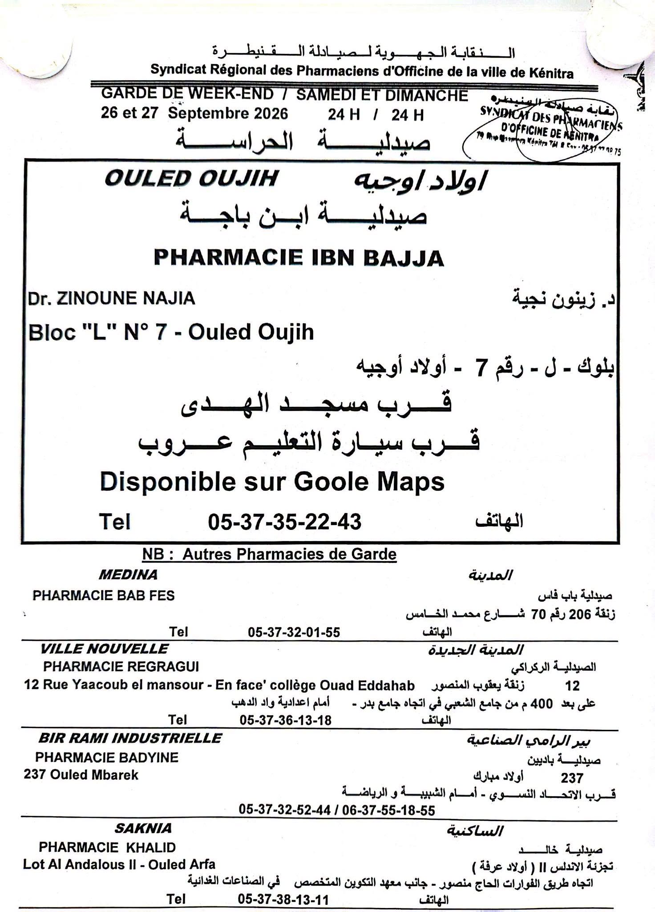

صيدلية ابن بيطار
حراسةالحيOuled Oujih
العنوانLot Al Haddada, près de la mosquée Arayane, immeuble Al Rayhane, en face du grand rond-point
الهاتف05 37 35 70 22
صيدليات الحراسة
معلومات عملية لمساعدة العائلات على إيجاد صيدلية مفتوحة بسرعة.
قد تتغير المعلومات حسب نظام المداومة والأيام والعطل. يرجى الاتصال بالصيدلية قبل التنقل.
عرض صيدليات الحراسة اليومتحديث يومي
يتم تحديث المعلومات بانتظام.
ننصحكم بالاتصال بالصيدلية قبل التنقل.
الحيOuled Oujih
العنوانLot Al Haddada, près de la mosquée Arayane, immeuble Al Rayhane, en face du grand rond-point
الهاتف05 37 35 70 22
الحيMedina
العنوانAvenue Kennedy n°33, au centre des Khabazat
الهاتف05 37 36 59 23
الحيVille Nouvelle
العنوان2 avenue Youssef Ibn Tachafine et rue Farhat Hachad, près du café La Gronde et à 50 m de Carrefour Market
الهاتف05 37 36 12 96
الحيBir Rami Industrielle
العنوانHay Al Manzah Bir Rami Est, à côté de Diour Filaha
الهاتف05 37 36 44 06
الحيSaknia
العنوانLot Hay Mansour, près de la mosquée Fouarat
الهاتف05 37 38 00 32

دليل دائم
افتحوا الدليل الدائم في صفحة مخصصة.
ليست كل البطاقات محدثة حالياً. باقي الصيدليات قيد التحقق. إذا كنتم صيدلياً، تواصلوا معنا لتسريع إضافة معلوماتكم على Medomicile.